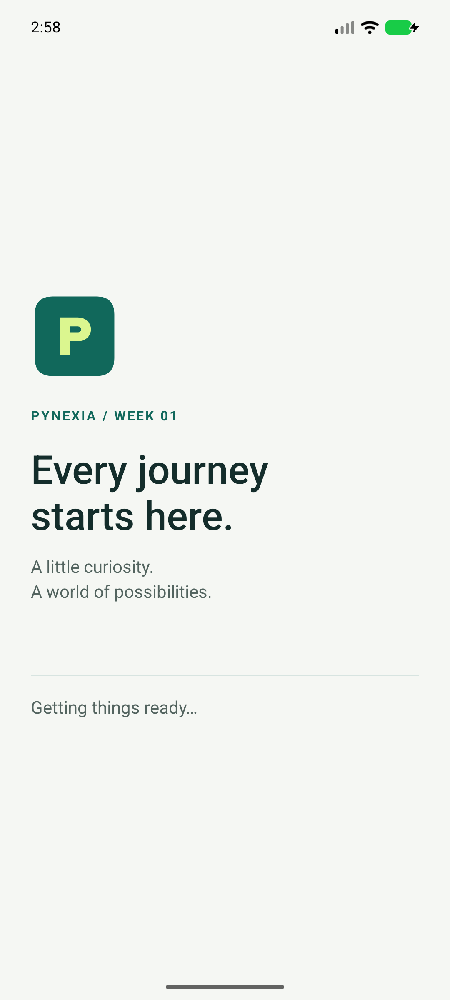
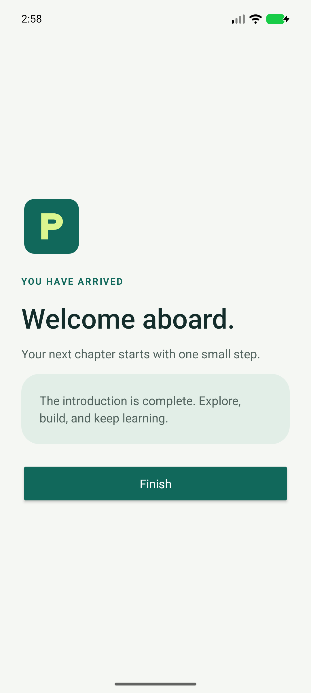

Native Android · Java + XML
Splash Screen
A considered first impression.
A native Android introduction that animates a project logo, waits for 2.2 seconds of foreground time, and opens a welcome screen.
Project showcase · Android 8.0+ · Debug build for assessment.
This page is not an Android emulator.

01 / Implementation
What the exercise demonstrates
Built around the assignment's Android UI, input and navigation requirements.
Read the bilingual implementation report (PDF)Logo and animation
XML layout with an original project mark and a 700 ms fade/scale animation.
Delay and lifecycle
Handler schedules navigation; onPause removes callbacks and retains the remaining delay. onResume resumes it; onDestroy cleans up.
Intent navigation
An explicit Intent opens MainActivity. Finishing the splash prevents Back from replaying it.
02 / In the app
Real screens. Tested flows.
Captured from the native application running on the test emulator. Select an image to see it at full resolution.



03 / Try it
A short review walkthrough
- Launch the app and watch the logo animate.
- After approximately 2.2 seconds in the foreground, confirm the welcome screen appears.
- Relaunch, background the app during the introduction, then return. The remaining delay resumes.
- Press Back from the welcome screen: the introduction should not reappear.
Build and run from source
Open the repository root in Android Studio. Install SDK 35 / Build Tools 35.0.0, select JDK 17 or 21, sync Gradle and run the splash module. Initial sync needs internet.
Verification / 25 Oct 2026
Checks with documented limits
Two device tests cover automatic navigation, disposal of the introductory Activity, and pausing navigation while backgrounded. There are no separate JVM tests for this UI-only exercise.
0 JVM tests and 2 device tests passed. Lint: zero errors, 7 warnings retained without suppression.
Pixel 8 emulator, Android 17 / API 37 (37.1 image), x86_64. No physical-device or API 26 test run. The APK signature was verified.
Inspect verification reportsشرح التمرين
يعرض التمرين شاشة افتتاحية تحتوي على شعار وحركة بسيطة، ثم ينتقل تلقائيًا إلى الشاشة الرئيسية. يتوقف عدّاد الانتظار عند خروج التطبيق إلى الخلفية ويستكمل المدة المتبقية عند العودة. تنتهي الشاشة الافتتاحية بعد الانتقال حتى لا تظهر مجددًا عند الضغط على زر الرجوع.
للتجربة: افتح التطبيق وانتظر الانتقال التلقائي، ثم أعد تشغيله واخرج إلى الخلفية قبل انتهاء المقدمة وعد إليه للتحقق من استكمال الانتظار.
04 / Submission kit
Everything for the project form
Copy the repository URL, hosted URL and implementation notes. Attach the ZIP (under 10 MB) or the PDF report. These are prepared values; this page does not submit to Pynexia.